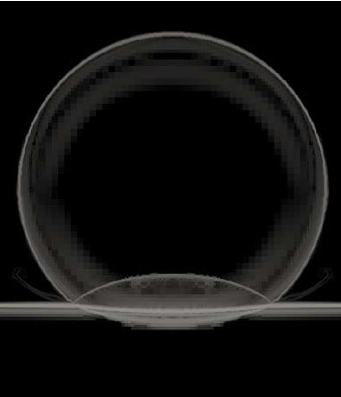

High-Speed Water Droplet Impact Modelling
Numerical investigation of short-duration, high-speed water droplet impact using a compressible multiphase CFD solver. The work focuses on modelling assumptions, solver configuration, and pressure evolution relevant to erosion analysis in turbomachinery contexts.
At a Glance
- Methods: Compressible multiphase CFD, transient simulation
- Tools: ECOGEN, ParaView, HPC
- Focus: Pressure response, mesh refinement, numerical stability
Problem Context
High-speed droplet impacts are a key contributor to leading-edge erosion in turbine blades. Capturing the short-duration pressure response requires careful consideration of compressibility effects, interface treatment, and spatial resolution.
Simulation Workflow
The workflow was developed to balance physical fidelity with computational cost. Particular emphasis was placed on justifying compressible modelling assumptions and assessing sensitivity to mesh refinement and solver parameters.
Key Results
Peak pressure magnitude and temporal evolution were strongly influenced by local mesh resolution. Increasing refinement beyond a threshold yielded diminishing returns relative to computational cost.
Limitations & Lessons
The study was limited by available computational resources and simplified material response. The work highlighted the importance of clearly defining validity limits when interpreting transient CFD results.